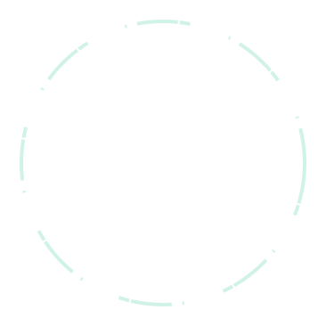

 

- Q4 2018 release
- Open-source platform
- Litepaper
The Core is the undercurrent power that runs deep in any system and defines its capabilities.
We’ve made speed and convenience our priorities. That is why our blockchain is based on DPoS (Delegated Proof-of-Stake) consensus algorithm that allows faster transactions and has the innate support for smart contracts written in Solidity. This way our blockchain confirms transactions faster, hence it executes contracts faster, as well as it brings blockchain technology closer to the real world use.
As you read these lines, all the existing platforms are trying to fight the issue of slow transactions. But the blockchain world doesn’t have ready decisions yet because it falls into the trap of using the Etherium Virtual Machine (EVM). To fight this problem, we’ve built our own virtual machine (Array Virtual Machine or AVM) that performs actions faster (e.g. it executes smart contracts 25% faster than Python-based VMs).
Another factor that we value the most is security. We protect our users by providing them with two kinds of keys - public and private ones. To make our platform a safe and pleasant experience, we’ve created a shield called the Keychain.
Keychain is a system for creating and managing private keys, signing transactions, and encrypting the data. It supports various formats of private keys (e.g. ECDSA and RSA) and can be used by a node, a Client or a DApp's Node.js server to sign transactions. It can also be used by a Web application to keep the keys in an isolated environment.
The Array Platform allows developers to easily create DApps using a set of tools, which includes a software development kit (SDK), IDE plugins, Array.IO Node all-in-one installation tool and the extensive documentation with tutorials and guidelines.
Our SDK consists of a smart contract compiler and debugger, as well as a set of APIs for cross-chain connectivity and IPFS interaction.
IDE plugins offer easy-to-use environment for DApp creation and deployment, while the Array.IO Node installation tool enables you to instantly connect to our blockchain.
Our client application has a user-friendly interface which gives access to the DApp marketplace and runs the installed DApps in an isolated environment. It has several components built in: local storage, IPFS, keychain, OrbitDB, logger, and many more. These features are easily incorporated with the tools provided in the client SDK, which makes DApp development accessible for anyone.
A novel blockchain project requires not only the cutting-edge development ideas, but also the right attitude to fundraising. Initial Development Offering, or IDO, is an innovative approach to attract investments, that is deemed fair for all parties involved. Although it has some features of the ICO (i.e. the distribution of tokens among the project backers in return for their ETH), the core ideas of IDO are quite different.
Delegated Proof of Stake consensus algorithm requires validation of blocks by special nodes we call Delegates. DPoS is significantly faster and less prone to cartelization than Proof of Work algorithm. You have the opportunity to become an Array Witness and later a Delegate who validates new blocks.
Array.IO uses an inter-blockchain communication protocol to allow synchronization between different blockchains
SMPs provide a set of capabilities for safe and convenient communication with other blockchains
In addition to IPFS, Array.IO supports local storage which can be used to store large amounts of data
Array.IO keychain brings together different implementations of the Elliptic Curve cryptography to ensure that any key type is supported and managed in a secure way.
| GitHub | github.com/arrayio |
| @ProjectArray | |
| Telegram | @arrayio |
| Medium | Read |
| Follow | |
| Stackoverflow | Ask |
| Feedback |